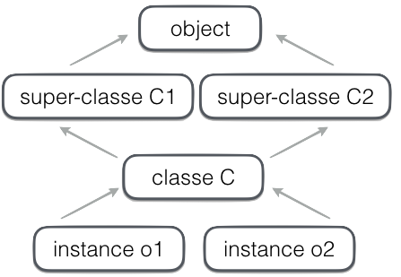
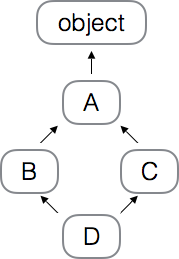

POO & héritage¶
pour réutiliser du code en python¶
fonctions
pas d’état après exécution
modules
garde l’état
une seule instance par programme
classes
instances multiples
chacune garde l’état
héritage
programmation orientée objet¶
pourquoi et comment ?
deux objectifs¶
modularité
réutilisabilité
deux moyens¶
espaces de nom
héritage
modularité & réutilisabilité¶
du code modulaire
grouper le code dans une classe
grouper les données dans un objet
plus on découpe en petits morceaux
plus on a de chances de pouvoir réutiliser
DRY don’t repeat yourself
cut’n paste is evil
code générique
ex: un simulateur fait “avancer” une collection d’objets
dès qu’un objet explique comment il avance
il peut faire partie de la simulation
c’est là qu’intervient l’héritage
espaces de nom¶
tous les objets qui sont
un package
un module
une classe
une instance (sauf des classes builtin)
constituent chacun un espace de nom
i.e. une association attribut → objet
espaces de nom - pourquoi¶
permet de lever l’ambigüité en cas d’homonymie
si 2 modules utilisent tous les 2 une globale
trucelles peuvent coexister sans souci
les espaces de nom sont imbriqués (nested)
ex.
package.module.classe.methode
on peut accéder à tous les objets
dès qu’on sait le faire partir d’une variable
par exemple un module importé
l’héritage rend cela dynamique
i.e. la résolution des attributs est faite à runtime
espaces de nom - variables et attributs¶
deux mondes étanches¶
variables
attributs
se mélangent¶
apparemment seulement
apprenez à bien lire
typiquement dans une expression comme a.b.c.d
aest une variable
b,cetdsont des attributs
variables statiques / attributs dynamiques¶
résolution des variables¶
entièrement lexical
en remontant dans le code
avec les règles LEGB
local, englobant, global, builtin
résolution des attributs¶
dans le monde des objets
en remontant les espaces de nom
essentiellement dynamique
i.e. à runtime
par ex dans a.b.c.d
la variable
aest identifiée lexicalement
(variable locale, paramètre de fonction,
souvenez-vous par exemple des clôtures)la variable référence un objet
best cherché comme un attribut à partir de cet objet
résolution d’attribut¶
la résolution des attributs
fournit la mécanique de base de la POO
et sous-tend notamment (mais pas que)
la mécanique de l’héritage
ex: une classe et une instance¶
# une classe sans heritage
# et juste un constructeur
class Point:
def __init__(self, x, y):
self.x = x
self.y = y
# comme toujours, la classe
# est une usine à objets
point = Point(2, 3)
point.x
2
2 espaces de nommage¶
à ce stade nous avons deux espaces de nom
la classe
PointPoint.__init__: la méthode
l’instance
point.x: 2 pour cette instancepoint.y
# on va voir ça
# dans pythontutor
%load_ext ipythontutor
la classe et l’instance: deux espaces de nom distinct
%%ipythontutor width=1000 height=450
class Point:
def __init__(self, x, y):
self.x = x
self.y = y
point = Point(2, 3)
digression : l’attribut spécial __dict__¶
les (objets qui sont des) espaces de nom
ont un attribut spécial
qui s’appelle
__dict__qui permet d’inspecter un espace de nom
ce n’est pas une notion à retenir,
mais on va s’en servir dans la suite
pour regarder le contenu des espaces de nom
# quand on n'a pas pythontutor
# on peut simplement regarder __dict__
point.__dict__
{'x': 2, 'y': 3}
deux espaces de nom (classe et instance) - fin¶
on l’a bien vu sous pythontutor, mais redisons les choses
# la classe possède
# l'attribut '__init__'
'__init__' in Point.__dict__
True
# c'est la méthode
# qu'on a définie
type(Point.__init__)
function
# par contre elle ne possède
# pas d'attribut x
'x' in Point.__dict__
False
# l'attribut x se trouve
# bien dans l'espace de nom
# de l'instance
'x' in point.__dict__
True
recherche de bas en haut¶
pour la lecture :
la règle pour chercher un attribut en partant d’un objet consiste à
le chercher dans l’espace de nom de l’objet lui-même
sinon dans l’espace de nom de sa classe
sinon dans les super-classes
on verra les détails plus loin
ex. de résolution d’attribut¶
# cas simple sans héritage
# appel d'une méthode
import math
class Vector:
def __init__(self, x, y):
self.x = x
self.y = y
def length(self):
return math.sqrt(
self.x**2 + self.y**2)
# quand on cherche vector.length
# on cherche
# 1. dans vector - pas trouvé
# 2. dans Vector - bingo
vector = Vector(3, 4)
vector.length()
5.0
voyons ça en détail..
espaces de nom¶
la classe
Vectora les attributs__init__length
l’objet
vectora les attributsxety,mais pas
length!
%%ipythontutor width=1000 height=400 curInstr=7
import math
class Vector:
def __init__(self, x, y):
self.x = x
self.y = y
def length(self):
return math.sqrt(self.x**2 + self.y**2)
vector = Vector(2, 2)
pour visualiser la même chose à base d’introspection dans le code
(rappel : tous les espaces de nom ont un attribut __dict__)
# les attributs 'intéressants' de Vector
[att for att in Vector.__dict__ if '__' not in att or att == '__init__']
['__init__', 'length']
# et dans l'instance
list(vector.__dict__)
['x', 'y']
exemple avec héritage¶
jusqu’ici on n’a pas encore de l’héritage
puisque pour l’instant on n’a qu’une classemais l’héritage
est une simple prolongation de cette logique
# une classe fille sans aucun contenu
class SubVector(Vector):
pass
subvector = SubVector(6, 8)
# comment fait-on pour trouver subvector.length ?
subvector.length()
10.0
%%ipythontutor width=1000 height=400 curInstr=8
import math
class Vector:
def __init__(self, x, y):
self.x = x
self.y = y
def length(self):
return math.sqrt(self.x**2 + self.y**2)
class SubVector(Vector):
pass
subvector = SubVector(6, 8)
c’est exactement le même mécanisme qui est à l’oeuvre :
quand on va vouloir appeler
subvector.length()on cherche l’attribut
lengthdans l’instance : nondans la classe : non
dans la super-classe : ok, on prend ça
remarque importante : lecture ≠ écriture¶
le mécanisme de recherche d’attribut qu’on vient de voir
ne fonctionne que pour la lecture des attributs
quand on écrit un attribut dans un objet,
c’est un mécanisme différent (slide suivant)
# quand on évalue un attribut en lecture
# on recherche en partant de l'objet
# et donc ici on trouve la méthode
# dans l'espace de noms de la super-classe
subvector.length()
10.0
# mais quand on écrit un attribut
# c'est une autre histoire complètement
# l'attribut est créé directement dans l'objet
subvector.foo = 12
'foo' in subvector.__dict__
True
lecture ≠ écriture - discussion¶
mais attention lorsqu’on écrit un attribut
i.e. si l’expression
foo.barest à gauche d’une affectation
alors l’attribut
barest créé/écrit dans l’objetfooil n’y a pas de recherche dans ce cas !
et heureusement d’ailleurs :
c’est le cas notamment à chaque fois qu’un constructeur fait
self.name = name
cela ne se remarque pas avec les méthodes
car c’est très rare d’écrire
instance.methode = ...
mais du coup, se souvenir que lire et écrire un attribut ne sont pas symétriques
lecture vs écriture¶
il y a écriture si
et seulement si il y a affectationdans 1. il y a
lecture de l’attribut
listemême si on modifie l’objet
dans 2. il y a
écriture de l’attribut
donc écrit dans (l’espace de nom)
obj
lecture !
obj.liste.append('foo')
écriture
obj.liste += ['foo']
héritage¶
une classe peut hériter d’une (ou plusieurs) autre classes
si A hérite de B
on dit que A est la sous-classe de B
et B est la super-classe de A
la sous-classe hérite des attributs de sa super-classe
l’instance hérite de la classe qui la crée
# la syntaxe est
class Class(Super):
pass
# ou
class Class(Super1, Super2):
pass
---------------------------------------------------------------------------
NameError Traceback (most recent call last)
/tmp/ipykernel_2855/2005943242.py in <module>
1 # la syntaxe est
----> 2 class Class(Super):
3 pass
4
5 # ou
NameError: name 'Super' is not defined
graphe d’héritage¶
on peut donc construire un graphe d’héritage
allant des super-classes aux instances

class C1:
pass
class C2:
pass
class C(C1, C2):
def func(self, x):
self.x = 10
o1 = C()
o2 = C()
recherche dans l’arbre d’héritage¶
MRO : method resolution order
l’algorithme est le suivant
liste toutes les super-classes en utilisant
un algorithme DFLR (depth first, left to right)si classe dupliquée,
ne garder que la dernière occurrence

class A: pass
class B(A): pass
class C(A): pass
class D(B, C): pass
parcours DFLR:
D,B,A,object,C,A,objectsuppressions :
D,B, ~~A~~, ~~object~~,C,A,object
isinstance() et issubclass()¶
isinstance(x, class1)retourneTruesixest une instance declass1ou d’une super classeissubclass(class1, class2)retourneTruesiclass1est une sous-classe declass2ces fonctions builtin sont à privilégier par rapport à l’utilisation de
type()
# A est la superclasse de B
a, b = A(), B()
isinstance(a, A), isinstance(b, B)
(True, True)
# bien sûr NON
isinstance(a, B)
False
# OUI, et NON
isinstance(b, A), type(b) is A
(True, False)
issubclass(B, A)
True
isinstance(B, A)
False
attributs de classe¶
dans (l’espace de nom d’)une classe, on peut mettre
des méthodes (on le savait)
et aussi attributs normaux - qui référencent des données
rien de nouveau point de vue syntaxe :
on écrit juste la déclaration dans la classe,
au même niveau d’imbrication que les méthodes
voyons cela sur un exemple
class Factory:
# un compteur global à la classe
# dans lequel on va pouvoir mémoriser
# tous les labels de toutes les instances
all_labels = []
def __init__(self, label):
self.label = label
Factory.all_labels.append(label)
# on aurait pu écrire
# self.all_labels.append(label)
# mais c'est dangereux (voir suite)
Factory.all_labels
[]
f1 = Factory('premier')
Factory.all_labels
['premier']
f2 = Factory('second')
Factory.all_labels
['premier', 'second']
# on trouve le même objet quel que soit l'endroit d'où on part
f1.all_labels is f2.all_labels is Factory.all_labels
True
%%ipythontutor width=1000 height=400
class Factory:
all_labels = []
def __init__(self, label):
self.label = label
# ça marche aussi, mais ATTENTION
self.all_labels.append(label)
f1 = Factory('premier')
f2 = Factory('second')
%%ipythontutor width=1000 height=400 curInstr=1
class Factory:
all_labels = []
def __init__(self, label):
self.label = label
# cette forme ne fonctionne pas comme attendu
# parce que à droite d'une affectation
self.all_labels = self.all_labels + [label]
f1 = Factory('premier')
f2 = Factory('second')
super()¶
utile lorsque la spécialisation
consiste à ajouter ou modifier
par rapport à la classe mèrele cas typique est d’ailleurs le constructeur
dès qu’on ajoute un attribut de donnéepermet de ne pas mentionner explicitement le nom de la classe mère (code + générique)
# illustration de super()
# dans le constructeur
class C:
def __init__(self, x):
print("init x par superclasse")
self.x = x
class D(C):
def __init__(self, x, y):
# initialiser : la classe C
super().__init__(x)
print("init y par classe")
self.y = y
c = C(10)
init x par superclasse
d = D(100, 200)
init x par superclasse
init y par classe
# super() est souvent rencontrée
# dans __init__ mais s'applique
# partout
class C:
def f(self):
print('spam')
class D(C):
def f(self):
# remarquez l'absence
# de self !
super().f()
print('beans')
c = C(); c.f()
spam
d = D(); d.f()
spam
beans
résumé¶
les instances et classes sont des objets mutables (sauf classes builtin)
on utilise
isinstance()pour tester le type d’un objetchaque instance et chaque classe est un espace de nom
lorsqu’on écrit un attribut, on écrit directement dans l’espace de nom de cet objet
en lecture, on résoud la référence d’un attribut de bas en haut
en général
les classes ont des attributs de type méthode
les objets ont des attributs de type donnée
mais le modèle est flexible
une méthode peut faire référence à la super-classe avec
super()